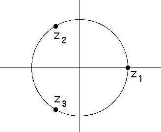
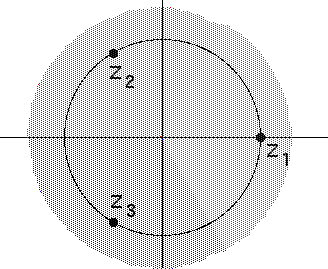
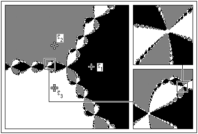

| After reporting the result for |
| The complex function |
|  |
| These points are equally spaced around the unit circle, so one might expect the basins of attraction of these three roots would be three 120 deg pie slices, symmetrically placed about each root. |
|  |
| This is not true, and Cayley knew it. He did not solve the problem, because the solution is very complicated, as we see here. |
|  |
| Starting from points painted black, Newton's method converges to 1, from
points painted grey to |
| The boundary between these regions is very complicated: any circle enclosing points of two of these colors must also enclose points of the third color. This is called the Wada property. |
| Also, we observe this system has fractal basin boundaries. |
| Starting on the boundary points themselves, Newton's method does not converge to any root, but is chaotic. |
Return to Newton's Method Basins of Attraction.